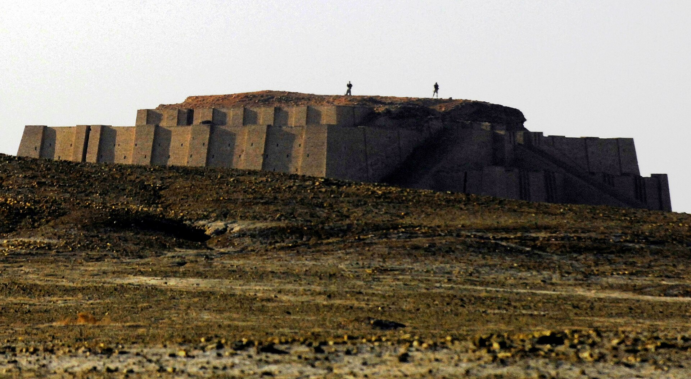
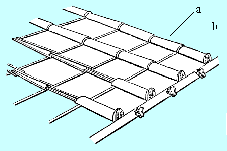
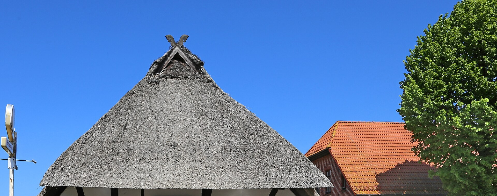
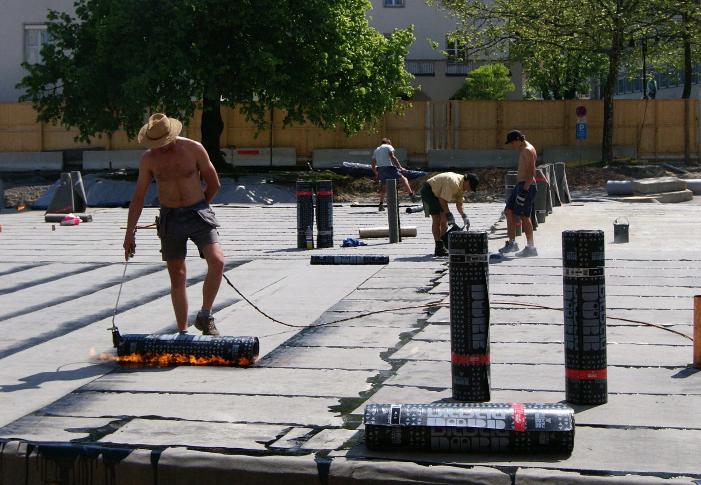
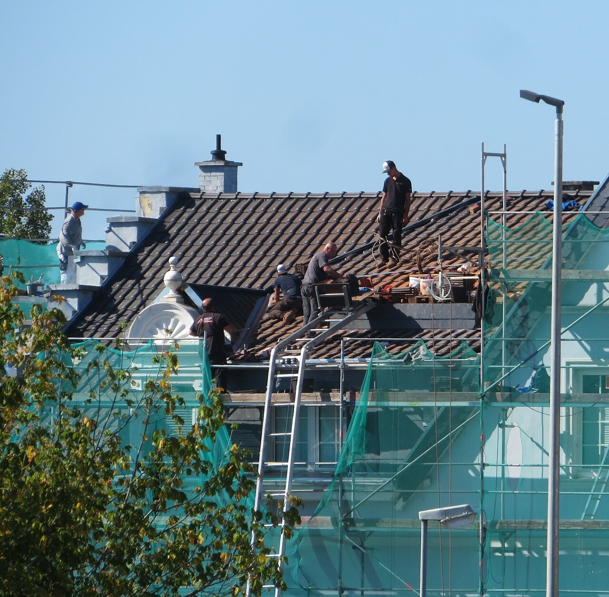

Geschichte
Ein Dach musste immer schon eines können: dichthalten.
Lange bevor es Bitumenbahnen, Schweißbrenner und Prüfnadeln gab, haben Menschen schon versucht, Wasser aus ihren Häusern herauszuhalten — mit Schilf, Lehm, Ton und einem klebrigen schwarzen Stoff, der einfach aus dem Boden trat. Die Werkzeuge haben sich seitdem oft geändert. Die Aufgabe nie.

Wer heute eine Bitumenbahn verschweißt oder eine Kunststoffbahn mit Heißluft verbindet, arbeitet am Ende eines sehr langen Versuchs: Wasser dort zu halten, wo es hingehört, und es von dort fernzuhalten, wo es Schaden anrichtet. Diese Aufgabe ist so alt wie das Bauen selbst — nur die Mittel dafür haben sich immer wieder neu erfunden.
Dieser Essay zeichnet diesen Weg in fünf Stationen nach: von den ersten gedeckten Hütten der Steinzeit über das technische Können Roms, die zunftgebundene Handwerkskunst des Mittelalters und die Materialrevolution der Industrialisierung bis zur heutigen Flachdachtechnik — mit der auch HD Abdichtungstechnik arbeitet.
Station 1 · ca. 10.000 v. Chr. – 3000 v. Chr.
Die ersten Dächer: Schilf, Lehm und Bitumen
Die ältesten Dächer, von denen wir wissen, waren keine Konstruktionen im heutigen Sinn, sondern einfache Schichten aus dem, was vor Ort verfügbar war: Blattwedel, Binsen, Grasplatten, Baumrinde, später Schilf. Sie boten Schutz vor Sonne und leichtem Regen, aber gegen Dauerregen und Feuchtigkeit von unten waren sie kaum eine Lösung — Wasser drang durch, wenn man es nicht gezielt ableitete.
Der eigentliche Durchbruch für die Abdichtung im engeren Sinn kam aus einer Region ganz ohne Wald und Stein: Mesopotamien, dem Gebiet zwischen Euphrat und Tigris im heutigen Irak. Dort tritt Bitumen — ein zähes, klebriges Erdöl-Derivat — an manchen Stellen von selbst aus dem Boden. Sumerer und Babylonier erkannten früh, was sich damit anfangen ließ: Bitumen wurde als Mörtel für Ziegelbauten verwendet, als Klebstoff, und eben auch als Abdichtung gegen Feuchtigkeit — aufgetragen auf Lehmziegel-Bauten, um sie regenfest zu machen, und auf Schilfboote, um sie wasserdicht zu machen.
Am eindrucksvollsten zeigt sich das an den Zikkurats, den stufenförmigen Tempeltürmen Mesopotamiens. Ihr Kern bestand aus einfachen, luftgetrockneten Lehmziegeln — billig, aber nicht witterungsfest. Die Außenschale dagegen wurde aus gebrannten Ziegeln errichtet und mit Bitumen statt gewöhnlichem Mörtel verlegt. Das Bitumen verband die Ziegel nicht nur, es versiegelte sie auch gegen eindringende Feuchtigkeit — im Prinzip schon eine mehrschichtige Konstruktion aus tragendem Kern und abdichtender Außenhaut, wie man sie in anderer Form bis heute baut.
Schon vor über 4000 Jahren galt: die Konstruktion trägt, die Abdichtung schützt — zwei getrennte Aufgaben, ein gemeinsames Ziel.
Bemerkenswert ist, wie bewusst dieser Werkstoff eingesetzt wurde. Bitumen kam in Mesopotamien nicht überall gleich häufig vor — an manchen Stellen des Euphrat und Tigris traten natürliche Quellen und Sickerstellen zutage, andernorts musste es über weite Strecken herangeschafft werden. Es entstand ein früher Handel mit dem Material, das neben dem Bauwesen auch als Klebstoff für Werkzeuge, in der Schiffsabdichtung und sogar in der Medizin verwendet wurde. Ein Baustoff, der so vielseitig war, dass er zu den frühesten planmäßig gehandelten Rohstoffen der Menschheitsgeschichte zählt.
Für die Bauausführung bedeutete das: Wer sich Bitumen leisten konnte, baute damit gezielt an den Stellen, die am meisten Feuchtigkeit abbekamen — Fundamente, Außenschalen, Wasserbecken. Der Rest der Konstruktion blieb bei den günstigeren, aber weniger widerstandsfähigen Lehmziegeln. Diese Idee, teure, hochwertige Abdichtung gezielt nur dort einzusetzen, wo sie wirklich gebraucht wird, statt sie über die gesamte Fläche zu verschwenden, ist im Kern dieselbe Kalkulation, die auch heute noch jede Angebotskalkulation für ein Flachdach bestimmt.
Verarbeitet wurde das Bitumen vermutlich erhitzt und in flüssiger Form aufgetragen — der Werkstoff wird beim Erwärmen weich und streichfähig und härtet beim Abkühlen wieder zu einer zähen, elastischen Masse aus. Genau diese Eigenschaft, aus fest zu flüssig und zurück zu wechseln, ohne dabei ihre abdichtende Wirkung zu verlieren, macht Bitumen bis heute zum Ausgangsstoff für Dachabdichtungen: Ob als geschmolzene Masse in der Antike oder als Bahnenware, die mit dem Schweißbrenner erneut angeschmolzen und verklebt wird — das physikalische Grundprinzip ist über Jahrtausende exakt dasselbe geblieben.
Station 2 · ca. 800 v. Chr. – 400 n. Chr.
Rom: Ziegel, Gefälle und Zisternenputz
Die alten Griechen und die Römer nach ihnen lösten das Problem der Dachabdichtung auf eine andere Art: durch Form statt durch Klebstoff. Ihr Dachziegelsystem bestand aus zwei sich ergänzenden Teilen — der flachen, leicht gewölbten Tegula und dem halbrunden Imbrex, der über den Stoßfugen zweier Tegulae saß und das Wasser wie eine Rinne ableitete. Reihe für Reihe überlappend verlegt, entstand daraus eine geschlossene, selbsttragende Fläche, die Regen zuverlässig nach unten führte, ganz ohne Kleb- oder Dichtstoff. Das Prinzip war so wirksam, dass es sich über Jahrhunderte kaum veränderte und bis heute in südeuropäischen Dachlandschaften zu erkennen ist.

Für Bauwerke, bei denen Ziegel allein nicht ausreichten — Aquädukte, Zisternen, Thermen — entwickelten die Römer eine eigene Abdichtungsmasse: opus signinum, ein Gemisch aus Kalk, Sand und zerstoßenen Tonscherben. Verputzt auf Wände und Böden von Wasserbauten, ergab es eine dichte, wasserabweisende Oberfläche, die erstaunlich langlebig war — Reste davon sind an römischen Zisternen und Bädern bis heute erhalten. Anders als beim mesopotamischen Bitumen war das kein Naturstoff, sondern ein bewusst zusammengesetztes Baumaterial: die Abdichtung wurde zur eigenen Ingenieursdisziplin.
Was die Antike außerdem einführte und was bis heute jede Flachdachabdichtung bestimmt, war die Idee des Gefälles: Wasser läuft nur dann zuverlässig ab, wenn eine Fläche das auch erlaubt. Römische Böden in Nassräumen und auf Zisternen wurden gezielt mit leichtem Gefälle zu Abläufen hin gebaut — dieselbe Grundüberlegung, die heute hinter jeder Gefälledämmung auf einem modernen Flachdach steht.
Diese Sorgfalt hatte einen handfesten Grund: Rom baute in einem Maßstab, der Fehler teuer machte. In Thermalbädern zirkulierte unter dem Fußboden heiße Luft durch Hohlräume (die sogenannte Hypokaustheizung) — drang von oben Feuchtigkeit ein, drohte die gesamte Heizkonstruktion darunter zu verrotten oder zu versagen. Aquädukte mussten über Dutzende Kilometer nahezu verlustfrei Wasser transportieren, durch Täler, über Brücken, durch Tunnel. Beides verlangte keine beliebige Abdichtung, sondern eine berechenbare, reproduzierbare.
Genau das war die eigentliche römische Leistung: Abdichtung wurde von einer Frage handwerklicher Erfahrung zu einer Frage von Rezeptur und Verfahren. Opus signinum ließ sich in vorhersagbaren Mischungsverhältnissen herstellen, in mehreren dünnen Lagen auftragen und verdichten — ein Vorgehen, dessen Grundlogik sich bis heute nicht verändert hat: mehrere Schichten schlagen zuverlässiger ab als eine einzelne dicke.
Nicht jedes römische Gebäude war so aufwendig ausgeführt — und gerade das macht die Geschichte interessant. Auf einfacheren Nutzbauten reichte oft schon eine deutlich schlichtere Lösung: eine Lage Ziegel mehr, ein steilerer Winkel, ein weiterer Dachüberstand gegen Schlagregen. Abdichtung war schon damals eine Frage des Abwägens zwischen Aufwand und Anspruch — eine Zisterne, die über Monate Trinkwasser halten musste, bekam die aufwendige Lösung; ein Lagerschuppen kam mit der einfachen aus. Diese Abstufung nach tatsächlichem Bedarf statt nach Maximalstandard ist bis heute derselbe Gedanke, der hinter jeder guten Bauberatung steht.
Station 3 · ca. 500 – 1500
Mittelalter: Strohdächer, Feuer und Zünfte
Mit dem Ende des weströmischen Reichs geriet auch viel technisches Wissen in Vergessenheit oder wurde regional einfach nicht mehr gebraucht. Für den Großteil der mittelalterlichen Bevölkerung war das Dach der Wahl über Jahrhunderte wieder das Stroh- oder Reetdach — Bündel aus Stroh, Reet oder Schilf, dicht auf ein Holzgerüst gebunden. Richtig ausgeführt konnte ein solches Dach Jahrzehnte halten und Regen zuverlässig ableiten. Sein größtes Problem war nicht Nässe, sondern Feuer: brannte ein strohgedecktes Haus, sprang das Feuer im dicht bebauten mittelalterlichen Dorf oder in der Stadt oft auf die Nachbardächer über — ganze Stadtviertel gingen so verloren.

Genau diese Brandgefahr war einer der Gründe, warum sich gebrannte Dachziegel — nie ganz verschwunden, aber lange ein Luxusgut — ab dem späten Mittelalter allmählich wieder verbreiteten, zunächst in Städten und bei öffentlichen Bauten, wo das Risiko am größten war. Historische Überlieferung setzt einen wichtigen Entwicklungsschub im 15. Jahrhundert an: von Italien aus, wo sich Ziegelherstellung und Verlegetechnik professionalisierten, verbreitete sich das Wissen im selben Jahrhundert weiter nach Mitteleuropa.
Parallel dazu organisierte sich das Handwerk selbst neu. In den Städten des Mittelalters entstanden Zünfte — verbindliche Zusammenschlüsse eines Gewerbes, die festlegten, wer das Handwerk ausüben durfte, wie lange eine Lehre dauerte und welche Qualitätsstandards galten. Für das Dachdeckerhandwerk bedeutete das: Wissen wurde nicht mehr nur von Familie zu Familie weitergegeben, sondern systematisch über Lehrlinge und Gesellen tradiert und geprüft — ein früher Vorläufer dessen, was heute Meisterausbildung und Innung sind.
Auch beim Material selbst tat sich etwas. Im 16. Jahrhundert entwickelten sich in England erste Steildachziegel mit glasierter Oberfläche — eine dünne, gebrannte Schicht, die zusätzlich Wasser abwies und die Ziegel widerstandsfähiger gegen Frost machte. In Regionen mit eigenem Steinvorkommen, etwa in Mittelgebirgen, setzte sich parallel Schiefer als Dachdeckung durch: dünn gespaltene Steinplatten, die überlappend verlegt wurden und, richtig gedeckt, über hundert Jahre halten konnten. Welches Material sich wo durchsetzte, hing selten von der besten Technik ab, sondern meist ganz einfach davon, was in der Umgebung wuchs oder aus dem Boden kam — Reet an der Küste, Schiefer im Gebirge, Ziegel dort, wo guter Ton und Brennholz zusammenkamen.
Bis weit in die frühe Neuzeit blieb das Dach damit auch eine Frage von Herkunft und Wohlstand: einfache Häuser trugen weiter Stroh, während sich Kirchen, Rathäuser und die Häuser wohlhabender Bürger zunehmend Ziegel oder Schiefer leisten konnten. Erst mit städtischen Bauvorschriften, die aus genau der eingangs beschriebenen Feuerangst heraus entstanden, wurde die feuerfeste Dachdeckung vielerorts nach und nach zur Pflicht statt zur Wahl.
Das Werkzeug eines mittelalterlichen Dachdeckers wäre uns heute noch erkennbar, wenn auch deutlich schlichter: Leitern, Latten, ein Beil zum Zurichten von Holzschindeln, eiserne Nägel, bei Reetdeckern eine breite Nadel zum Durchziehen der Bindungen und ein Klopfbrett, um jede Lage fest an die vorherige zu drücken. Was fehlte, war nicht handwerkliches Können — mittelalterliche Reetdächer waren technisch ausgereift und hielten, sorgfältig gepflegt, mehrere Jahrzehnte —, sondern Material, das von sich aus feuerfest oder wirklich wasserundurchlässig war. Genau diese Lücke würden erst neue, industriell hergestellte Werkstoffe schließen.
Station 4 · ca. 1840 – 1970
19. Jahrhundert: Dachpappe und Bitumenbahn
Die Industrialisierung veränderte das Dachdeckerhandwerk gleich zweifach. Zum einen brachte die Eisenbahn Baumaterial über weite Strecken günstig transportierbar — Bauherren hatten plötzlich Zugriff auf eine viel größere Auswahl an Ziegelarten, als es vorher regional üblich war. Zum anderen, und langfristig folgenreicher, entstanden völlig neue Werkstoffe, die mit Ziegeln oder Schiefer wenig gemein hatten: Filz oder Gewebe, mit Teer oder Bitumen getränkt.
Die früheste dokumentierte Verwendung von geschmolzenem Asphalt zur Imprägnierung von Segeltuch stammt aus dem Jahr 1844 — der eigentliche Vorläufer der modernen bitumenbasierten Dachbahn. In den folgenden Jahrzehnten entwickelte sich daraus, was heute als Built-up Roofing bekannt ist: mehrere Lagen mit Teer oder Bitumen getränkter Pappe, mit heißem Bitumen zwischen den Lagen verklebt und häufig mit einer Kies- oder Sandschicht abgedeckt, die vor UV-Strahlung schützte und das Gewicht als zusätzlichen Halt gegen Wind nutzte. Das war günstig, relativ schnell zu verlegen und eignete sich erstmals gut für Flachdächer, die mit Ziegeln kaum sinnvoll zu decken gewesen wären.
Diese Bauweise passte zu ihrer Zeit: Die Industrialisierung ließ Städte in einem Tempo wachsen, das mit traditioneller Ziegeldeckung kaum mitzuhalten war. Fabrikhallen, Lagerhäuser, mehrstöckige Mietshäuser mit flachen oder kaum geneigten Dächern brauchten eine Abdichtung, die sich in großen, zusammenhängenden Flächen zügig verlegen ließ — genau das leistete die mehrlagige Bitumenpappe. Anders als beim handgeformten Dachziegel wurde die Rohbahn nun zunehmend in Fabriken vorgefertigt und in Rollen auf die Baustelle geliefert: Der erste Schritt einer Entwicklung, die bis zur heutigen, werkseitig geprüften Bahnenware führt.

Ab den 1970er-Jahren kam mit der Glasfasermatte ein Trägermaterial dazu, das nicht wie die alte organische Filzpappe verrotten konnte — die Bahnen wurden haltbarer und berechenbarer. Trotzdem blieb die Verlegung Handarbeit, die einiges an Erfahrung verlangte: Bitumen musste erhitzt und in der richtigen Konsistenz aufgetragen werden, was durchaus mit Verbrennungsgefahr und Dämpfen verbunden war. Genau diese Anforderungen an Können und Sorgfalt sind es, die den Unterschied machen zwischen einer Fläche, die zehn Jahre hält, und einer, die zehn Jahre hätte halten sollen.
Station 5 · ca. 1970 – heute
Heute: Kunststoffbahnen und Präzision
Die letzten Jahrzehnte brachten eine zweite Materialrevolution: Neben klassischen Bitumenbahnen etablierten sich ab den 1960er- und 1970er-Jahren sogenannte Einlagen-Dachbahnen aus synthetischem Kunststoff — allen voran EPDM-Kautschuk sowie PVC- und FPO-Kunststoffbahnen. Sie werden nicht mit offener Flamme verschweißt, sondern je nach Material mit Heißluft, speziellen Klebern oder Quellschweißmitteln verbunden — eine Technik, die weniger Hitze auf der Baustelle bedeutet und sich für viele Anschlussdetails eignet, die bei Bitumen aufwendiger wären.
Was sich am meisten verändert hat, ist aber vielleicht nicht das Material selbst, sondern die Kontrolle darüber. Wo früher Erfahrung und Augenmaß entschieden haben, ob eine Naht hält, gehören heute genormte Prüfschritte zum Standard: Nähte werden mit der Prüfnadel kontrolliert, Aufbauten folgen technischen Richtlinien für Flachdächer, die Gefälle, Dämmwerte und Anschlusshöhen verbindlich festlegen. Die Handwerkskunst ist nicht verschwunden — sie wird nur von klaren, überprüfbaren Standards begleitet, die früher schlicht nicht existierten.
In Deutschland bündelt die sogenannte Flachdachrichtlinie diese Anforderungen als anerkannte Regel der Technik: Sie legt fest, welches Mindestgefälle ein Flachdach braucht, wie Dämmung und Abdichtung zusammenspielen müssen und wie Anschlüsse an Attika, Wand oder Durchdringungen auszuführen sind, damit sie über Jahrzehnte dicht bleiben. Wer heute abdichtet, baut also nicht mehr nur nach Erfahrung, sondern gegen einen Maßstab, an dem sich jede Ausführung im Streitfall auch objektiv messen lässt — ein Sicherheitsnetz, das es zu Ziegel-und-Bitumen-Zeiten schlicht nicht gab.
Ein weiterer Wandel zeichnet sich gerade erst ab: das Flachdach als reine Wetterschutzfläche wird zunehmend auch als Nutzfläche gedacht — als Standort für Photovoltaik-Module oder als begrüntes Dach, das Regenwasser zurückhält und im Sommer kühlt. Für die Abdichtung darunter ändert das die Grundaufgabe nicht, erhöht aber die Anforderungen: Was auf Jahrzehnte unter einer Dachbegrünung oder fest montierten Anlagen liegt, muss so ausgeführt sein, dass eine spätere Reparatur gar nicht erst nötig wird.

Auch der Weg dorthin hat sich von den mittelalterlichen Zünften nicht so weit entfernt, wie man denken könnte: Wer den Beruf heute lernt, durchläuft weiterhin eine geregelte Ausbildung mit Geselle- und Meisterprüfung, organisiert über die Dachdecker- und Handwerksinnungen — dieselbe Grundidee wie vor Jahrhunderten, nur heute mit geprüften Materialien, technischen Regelwerken und Arbeitsschutz, statt mit reiner Zunfttradition.
Genau in dieser Tradition steht die Arbeit, die HD Abdichtungstechnik heute macht: Flachdächer, Balkone, Garagen und Terrassen auf Bitumen- oder Kunststoffbasis abdichten, mit den Werkzeugen, die weiter oben auf dieser Seite stehen — Schweißbrenner, Heißluftschweißgerät, Anpressrolle, Prüfnadel. Alte Aufgabe, neue Mittel.
Fazit
Was von damals bleibt
Vom Schilfdach der Steinzeit über das mit Bitumen verlegte Ziegelwerk Mesopotamiens, die geformten Dachziegel Roms, die zunftgeprüfte Handarbeit des Mittelalters und die Materialrevolution der Industrialisierung bis zur heutigen Kunststoffbahn: die Werkzeuge und Materialien haben sich immer wieder komplett erneuert. Was gleich geblieben ist, ist die eigentliche Aufgabe — eine Fläche so zu bauen, dass Wasser draußen bleibt, egal wie lange sie der Witterung ausgesetzt ist.
Genau das ist auch heute noch der Maßstab, an dem sich jede Abdichtung messen lassen muss.
Quellen
Weiterführend
- World History Encyclopedia — Ziggurat: Mountains of the Gods
- Smarthistory — Ziggurat of Ur
- Premium Bitumen — The History of Bitumen: From Ancient Times to Modern Infrastructure
- Täumer GmbH — Geschichte des Dachdeckens
- Spenglerei Weissbacher — Das Dachdeckerhandwerk — Entstehung, Geschichte und Zukunft
- Proteus Waterproofing — The evolution and history of felt roofing
- Western Colloid — A Brief History of Commercial Roofing and Where We Are Today
- EPDM Coatings Blog — A Brief History of Roofing Materials and Their Evolution
Bildnachweise: siehe images/geschichte/IMAGE-SOURCES.md im Projekt-Repository.